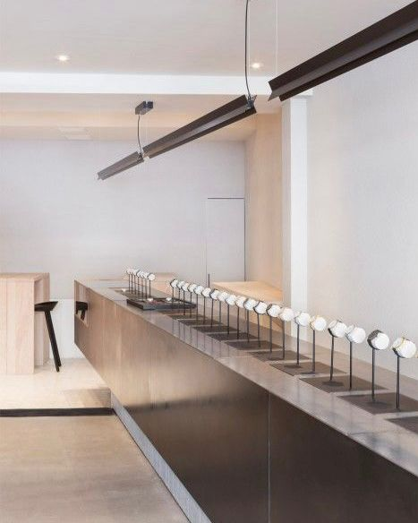
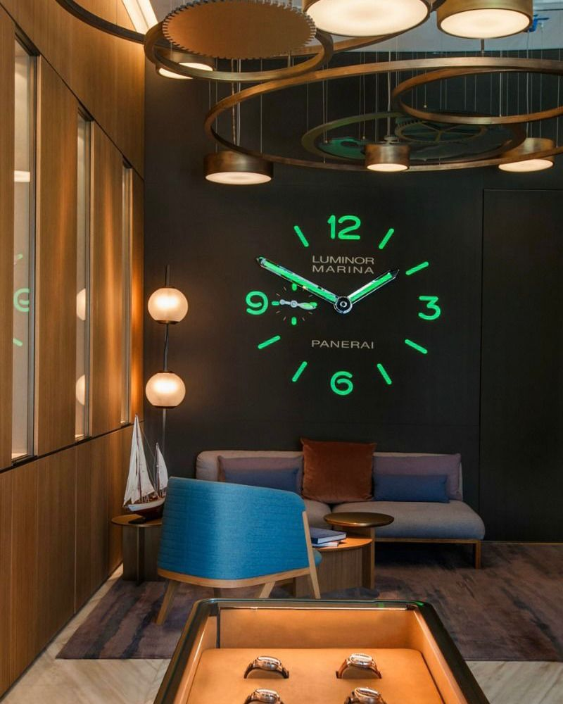

LOCATIONS
We are proud to serve customers seeking authentic women's watches at our store locations
in Tangerang and Yogyakarta, Indonesia. Visit our stores to experience
our curated collection in person and receive personalized assistance from our knowledgeable staff.
TANGERANG STORE

Address: Jl. Jalur Sutera Bar. No.Kav. 21, RT.001/RW.004,
Panunggangan, Kec. Pinang, Kota Tangerang, Banten 15143
Contact: +62 123 4567
Opening Hours: Monday-Saturday: 10:00 AM - 8:00 PM, Sunday: 11:00 AM - 6:00 PM
YOGYAKARTA STORE

Address: Jl. Wardhani No.2, Kotabaru, Kec. Gondokusuman, Kota
Yogyakarta, Daerah Istimewa Yogyakarta 55224
Contact: +62 987 6543
Opening Hours: Monday-Saturday: 9:00 AM - 9:00 PM, Sunday: 10:00 AM - 7:00 PM
ONLINE SHOP?
At WatchGoods we offer a unique and exclusive shopping experience for our customers.
Please note that our products cannot be purchased online. We invite you to visit our physical stores to explore our
exquisite collection of authentic timepieces.
Our knowledgeable staff will be delighted to assist you in finding the perfect watch that
meets your preferences and requirements. Immerse yourself in the world of luxury watches and discover
the craftsmanship and beauty up close.
We understand the importance of seeing, feeling, and trying on a watch before making a purchase.
Therefore, we believe that visiting our store will provide you with a more personalized and enjoyable shopping experience.
Please refer to our store locator for the addresses and opening hours of our locations in Jakarta and Yogyakarta.
We look forward to welcoming you and helping you find the perfect timepiece that reflects your unique style and personality.